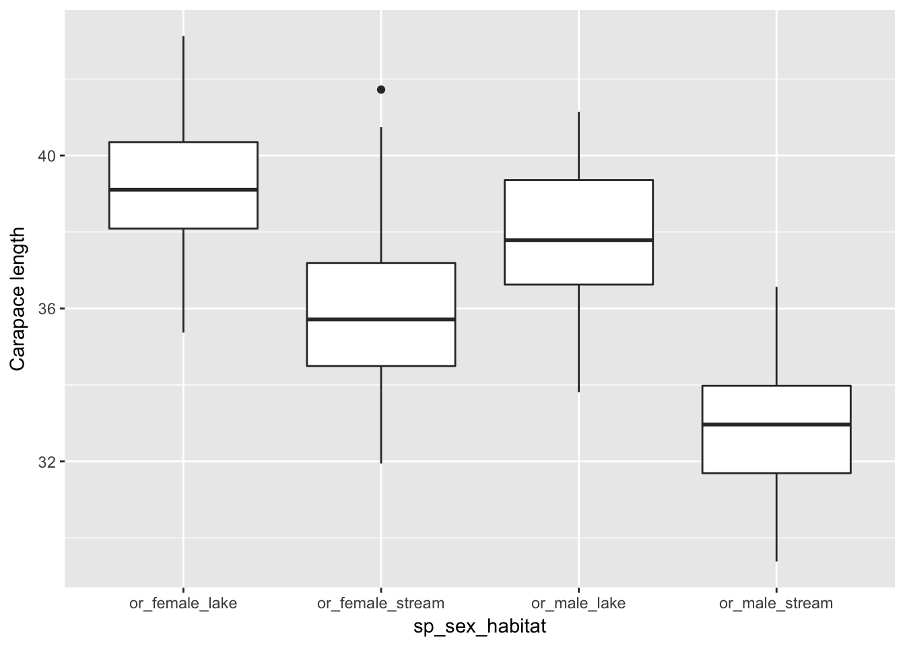
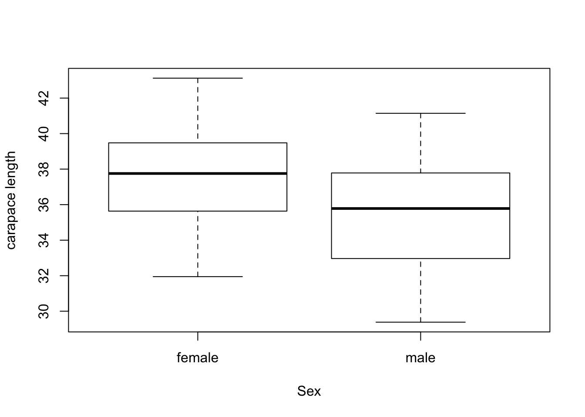
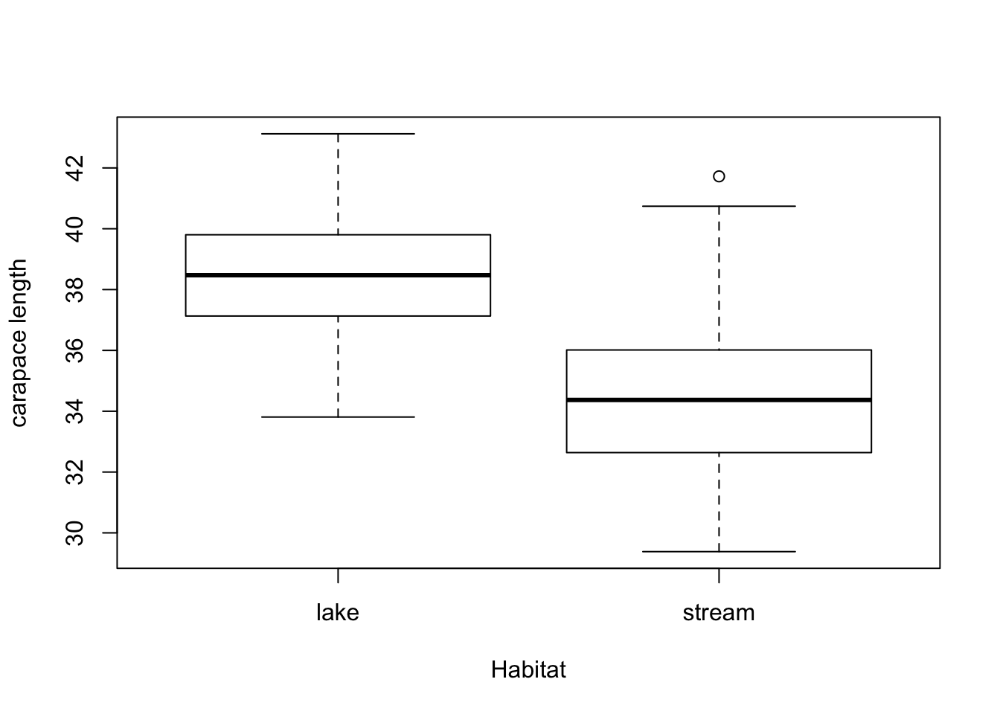
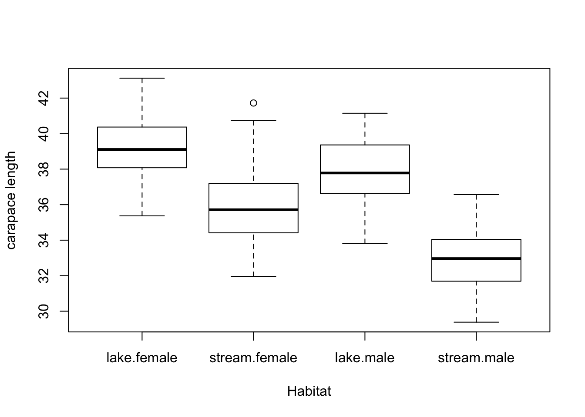
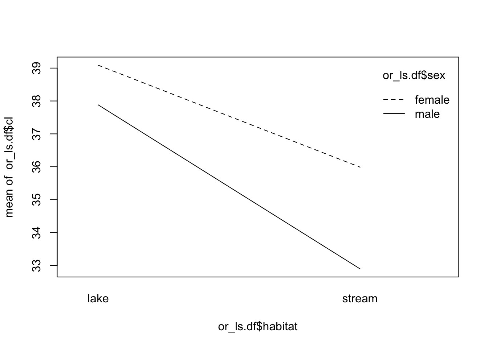
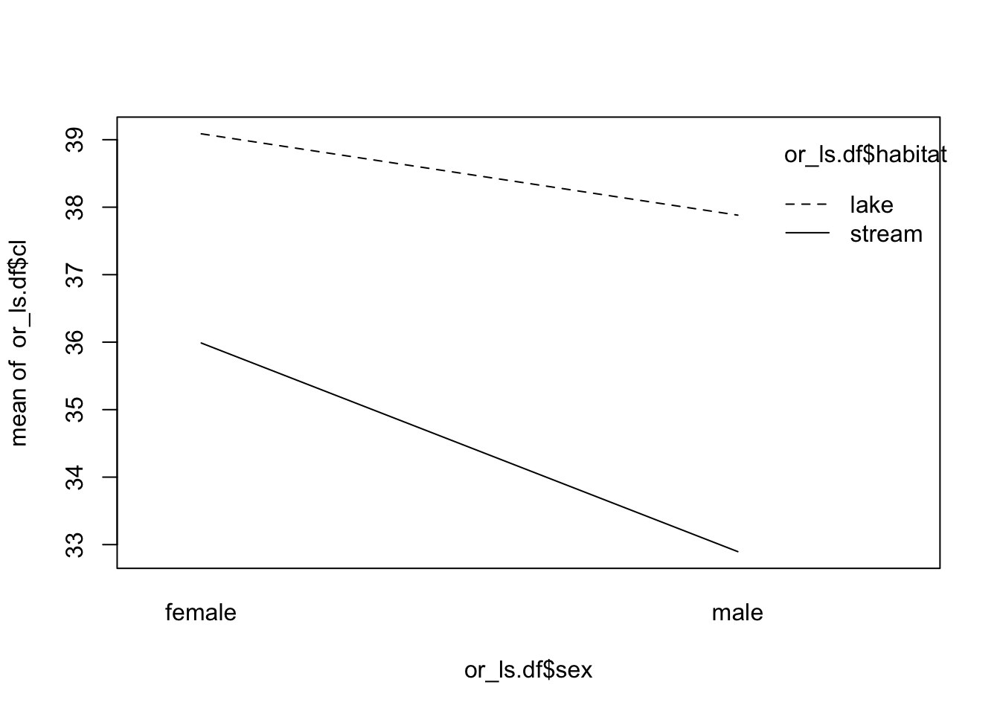

Two Way Anovas
Ok so this is a completely fake dataset that I will update soon to make it more useful to illustrate Type I vs Type III errors but for now we will go with it.
This section is for TWO WAY ANOVAs
An absolutley great coverage of this material is Dolph Schluters page at:
https://www.zoology.ubc.ca/~schluter/R/fit-model/
The key thing here is the use of the car package as it is essential for unbalanced designs and the use of Type III sum of squares otherwise Type I sum of squares are used which is rarely good. Weather to use Type II or III is a contentious issue and we will just go with Type III for all of our work
Load the libraries and data
# Standard use packages
library(tidyverse)
library(ggplot2)
library(dplyr)
library(tidyr)
library(readr)
#specific to anova and 2 way anova
library(broom)
library(car)
library(Rmisc)
library(Hmisc)
library(lsmeans)
# library(pwr)
# library(multcompView) # interferes with DPLYR load at the very end if we need to
# so rather han load data we are going to make it up from scratch:
# set up the sample sizes for each of the fixed varaibles we have
# male OR in lakes
orml=50
# female OR in lakes
orfl=50
# male OR in streams
orms=50
# female OR in streams
orfs=50
Now to make separate dataframes
# DATASET 1 ---- ---- ---- ---- ---- ---- ---- ---- ---- ----
#make dataframe for lake male OR
# create 50 random numbes between 34 and 55
set.seed(3)
cl <- rnorm(orml, 38, 1.85)
sp <- replicate(orml, "or")
habitat <- replicate(orml, "lake")
sex <- replicate(orml, "male")
or_m_lake <- cbind(habitat, sp, sex, cl)
# DATASET 2 ---- ---- ---- ---- ---- ---- ---- ----
#make dataframe for lake female OR
# create 50 random numbes between 34 and 60
set.seed(55)
cl <- rnorm(orfl, 39, 1.75)
sp <- replicate(orfl, "or")
habitat <- replicate(orfl, "lake")
sex <- replicate(orfl, "female")
or_f_lake <- cbind(habitat, sp, sex, cl)
# DATASET 3 ---- ---- ---- ---- ---- ---- ---- ----
#make dataframe for stream male OR
# create 50 random numbes between 28 and 38
set.seed(95)
cl <- rnorm(orms, 33, 1.5)
sp <- replicate(orms, "or")
habitat <- replicate(orms, "stream")
sex <- replicate(orms, "male")
or_m_stream <- cbind(habitat, sp, sex, cl)
# DATASET 4 ---- ---- ---- ---- ---- ---- ---- ----
#make dataframe for stream female OR
# create 50 random numbes between 28 and 50
set.seed(75)
cl <- rnorm(orfs, 36, 2.5)
sp <- replicate(orfs, "or")
habitat <- replicate(orfs, "stream")
sex <- replicate(orfs, "female")
or_f_stream <- cbind(habitat, sp, sex, cl)
Now to bind the dataframes together and clean up the code a bit
# Bind the dataframes together ----
#Rbind merges things top to bottom
or_ls.df <- as.data.frame(rbind(or_f_lake, or_m_lake, or_f_stream, or_m_stream))
# Make some new columns ----
#make a new column for some things below
or_ls.df <- unite_(or_ls.df, "sp_sex_habitat", c("sp", "sex","habitat"), sep="_", remove=FALSE)
#Get ride of all the garbage----
rm(cl, habitat, sex, sp, or_f_lake, or_m_lake, or_f_stream, or_m_stream)
#check dataframe and notice that cl is a factor
# sapply(or_ls.df, class)
# to convert to numeric takes this to make sure the number is preserved
# note this is a pain but it is how it has to be done.
or_ls.df$cl <- as.numeric(as.character(or_ls.df$cl))
# take the log of the carapace length
or_ls.df$logcl <- log(or_ls.df$cl)
head(or_ls.df)
## sp_sex_habitat habitat sp sex cl logcl
## 1 or_female_lake lake or female 39.21024 3.668938
## 2 or_female_lake lake or female 35.82834 3.578739
## 3 or_female_lake lake or female 39.26527 3.670340
## 4 or_female_lake lake or female 37.04136 3.612035
## 5 or_female_lake lake or female 39.00334 3.663647
## 6 or_female_lake lake or female 41.07991 3.715519
Now to look at the mechanics of a 2 WAY ANOVA - the set up
###NOW to two way anova ----
# need to make the categroical variable into factors
or_ls.df$sex <- as.factor(or_ls.df$sex)
or_ls.df$sp <- as.factor(or_ls.df$sp)
or_ls.df$habitat <- as.factor(or_ls.df$habitat)
or_ls.df$sp_sex_habitat <- as.factor(or_ls.df$sp_sex_habitat)
Boxplots
# Look at the data with box plots
or_ls.df %>%
ggplot() +
geom_boxplot(aes(x= sp_sex_habitat, y=cl)) +
labs(y="Carapace length")

Test for homogenetiy of variances
# Best to use the Levenes test compared to the Bartlet test
# uses the car package
# http://www.cookbook-r.com/Statistical_analysis/Homogeneity_of_variance/
# #Test for homogeneity of variances by groups
leveneTest(cl ~ sp_sex_habitat, data=or_ls.df)
## Levene's Test for Homogeneity of Variance (center = median)
## Df F value Pr(>F)
## group 3 1.381 0.2498
## 196
#Compared to the Bartlet test
bartlett.test(cl ~ sp_sex_habitat, data=or_ls.df)
##
## Bartlett test of homogeneity of variances
##
## data: cl by sp_sex_habitat
## Bartlett's K-squared = 5.3469, df = 3, p-value = 0.1481
THIS IS FOR 2 Way AOV With multiple independent variables, the interaction() function must be used to collapse the IV’s into a single variable with all combinations of the factors. If it is not used, then the will be the wrong degrees of freedom, and the p-value will be wrong.
Test for normality of data
# SHAPIRO_WILK TEST FOR NORMALITY----
# turn off scientific notaton
options(scipen = 999)
# to turn back on
#options(scipen = 0)
# Test for normality of each group and store in shapirowilktests
# This uses the broom package to get clean output of the test
or_ls.df %>% group_by(sex, habitat) %>% do(tidy(shapiro.test(.$cl)))
## # A tibble: 4 x 5
## # Groups: sex, habitat [4]
## sex habitat statistic p.value method
## <fct> <fct> <dbl> <dbl> <chr>
## 1 female lake 0.990 0.938 Shapiro-Wilk normality test
## 2 female stream 0.982 0.622 Shapiro-Wilk normality test
## 3 male lake 0.975 0.370 Shapiro-Wilk normality test
## 4 male stream 0.985 0.757 Shapiro-Wilk normality test
# they are a bit off surprisingly but go with it anyway and test residuals
# to see if the result is the same
Some basic Statistics in a new way
#Summary Stats----
# Do this to get the for N, Means Sd, Se, and CI
# need Rmisc library installed to do this
summary = summarySE(or_ls.df,
measurevar="cl",
groupvars=c("habitat","sex"))
summary
## habitat sex N cl sd se ci
## 1 lake female 50 39.08726 1.682961 0.2380067 0.4782923
## 2 lake male 50 37.88174 1.646132 0.2327982 0.4678255
## 3 stream female 50 35.98787 2.188953 0.3095647 0.6220936
## 4 stream male 50 32.89608 1.756239 0.2483696 0.4991175
Lets look at the basic plots of the effects and interactions
#Simple box plot of main effect and interaction
# this is the main effect of sit and season
boxplot(cl ~ sex,
data = or_ls.df,
xlab = "Sex",
ylab = "carapace length")

#Simple box plot of main effect and interaction
# this is the main effect of sit and season
boxplot(cl ~ habitat,
data = or_ls.df,
xlab = "Habitat",
ylab = "carapace length")

# box plots of the site and season
boxplot(cl ~ habitat:sex,
data = or_ls.df,
xlab = "Habitat",
ylab = "carapace length")

Interaction Plots
# Interaction Plots----
# This will generate two plots to compare groups according to the
# and examine interactions
# par(mfrow=c(1,3)) could use this to make multiple per page but is not great
interaction.plot(or_ls.df$habitat, or_ls.df$sex, or_ls.df$cl)

interaction.plot(or_ls.df$sex, or_ls.df$habitat, or_ls.df$cl)

TWO WAY AOV MODEL—-
This is the two way ANOVA
What you are looking for in here is the * after the value. if that is there then it is signficant. Below you would first look at the one where it is site:season - because if this is signifcant this is all you will analyze in the post anova or post F tests. If the interaction of site:season is not significant you would then look at the individual factors of season or site indiependently.
The way to read the results below is that the interaction and sites are not significant but season is significant and since there are only two you really dont need to do the post F test as it will just say the same thing but it woudl be differnet if you and more than one season for instance.
NOW FOR THE 2 WAY ANOVA
#THE TWO WAY AOV----
# Here is a two way AOV looking at site and season with the pairwise comparisons at the end
# Setting something as FACTOR makes it so that you are looking at these as categorical varaibles to compare the means of the two
# Type III is used for unbalanced designs when there are unequal numbers of samples in teh various categories or groups which is an unbalanced design
# Set it up for Type III SS ANOVA
options(contrasts = c("contr.sum", "contr.poly"))
# Fit the linear model and conduct ANOVA
model = lm(cl ~ sex*habitat, data=or_ls.df)
Anova(model, type="III") # Use type="III" ALWAYS!!!!
## Anova Table (Type III tests)
##
## Response: cl
## Sum Sq Df F value Pr(>F)
## (Intercept) 265914 1 79270.705 < 0.00000000000000022 ***
## sex 231 1 68.814 0.00000000000001717 ***
## habitat 817 1 243.584 < 0.00000000000000022 ***
## sex:habitat 44 1 13.258 0.0003472 ***
## Residuals 657 196
## ---
## Signif. codes: 0 '***' 0.001 '**' 0.01 '*' 0.05 '.' 0.1 ' ' 1
Now a summary of the model
# Are they the same? = Try running model with different data
# this produces R-Squared and overall p-value and parameter estimates
summary(model) # Produces r-square, overall p-value, parameter estimates
##
## Call:
## lm(formula = cl ~ sex * habitat, data = or_ls.df)
##
## Residuals:
## Min 1Q Median 3Q Max
## -4.0727 -1.2458 -0.0895 1.3662 5.7352
##
## Coefficients:
## Estimate Std. Error t value Pr(>|t|)
## (Intercept) 36.4632 0.1295 281.551 < 0.0000000000000002 ***
## sex1 1.0743 0.1295 8.295 0.0000000000000172 ***
## habitat1 2.0213 0.1295 15.607 < 0.0000000000000002 ***
## sex1:habitat1 -0.4716 0.1295 -3.641 0.000347 ***
## ---
## Signif. codes: 0 '***' 0.001 '**' 0.01 '*' 0.05 '.' 0.1 ' ' 1
##
## Residual standard error: 1.832 on 196 degrees of freedom
## Multiple R-squared: 0.6243, Adjusted R-squared: 0.6185
## F-statistic: 108.6 on 3 and 196 DF, p-value: < 0.00000000000000022
{#type_I}
## THIS WILL DO A TYPE I ANOVA
anova(model) # does the type I ANOVA
## Analysis of Variance Table
##
## Response: cl
## Df Sum Sq Mean Sq F value Pr(>F)
## sex 1 230.83 230.83 68.814 0.00000000000001717 ***
## habitat 1 817.10 817.10 243.584 < 0.00000000000000022 ***
## sex:habitat 1 44.48 44.48 13.258 0.0003472 ***
## Residuals 196 657.48 3.35
## ---
## Signif. codes: 0 '***' 0.001 '**' 0.01 '*' 0.05 '.' 0.1 ' ' 1
# NOTICE THE LOWER CASE A!!!!!
Checking assumptions of the model
Histogram of residuals from a linear model.
can produce comparisons for interaction effects.
lsmseason = pairs(lsmeans(model,"habitat"), adjust="bonferroni")
## NOTE: Results may be misleading due to involvement in interactions
### Means sharing a letter in .group are not significantly different
# when more than one categorical varaible
# cld(lsmseason,
# alpha=.05,
# Letters=letters)
test(lsmseason)
## contrast estimate SE df t.ratio p.value
## lake - stream 4.042528 0.2590174 196 15.607 <.0001
##
## Results are averaged over the levels of: sex
lsmseason.sex = pairs(lsmeans(model,"sex"), adjust="bonferroni")
## NOTE: Results may be misleading due to involvement in interactions
### Means sharing a letter in .group are not significantly different
# when more than one categorical varaible
# cld(lsmseason,
# alpha=.05,
# Letters=letters)
test(lsmseason.sex)
## contrast estimate SE df t.ratio p.value
## female - male 2.14865 0.2590174 196 8.295 <.0001
##
## Results are averaged over the levels of: habitat
POST HOC ANALYSIS
can produce comparisons for interaction effects.
lsminteraction = lsmeans(model,
pairwise ~ habitat:sex,
adjust="bonferroni")
lsminteraction$contrasts
## contrast estimate SE df t.ratio p.value
## lake,female - stream,female 3.099395 0.3663059 196 8.461 <.0001
## lake,female - lake,male 1.205517 0.3663059 196 3.291 0.0071
## lake,female - stream,male 6.191179 0.3663059 196 16.902 <.0001
## stream,female - lake,male -1.893878 0.3663059 196 -5.170 <.0001
## stream,female - stream,male 3.091784 0.3663059 196 8.440 <.0001
## lake,male - stream,male 4.985662 0.3663059 196 13.611 <.0001
##
## P value adjustment: bonferroni method for 6 tests
### Means sharing a letter in .group are not significantly different
# when more than one categorical varaible
cld(lsminteraction,
alpha=.05,
Letters=letters)
## habitat sex lsmean SE df lower.CL upper.CL .group
## stream male 32.89608 0.2590174 196 32.38526 33.40690 a
## stream female 35.98787 0.2590174 196 35.47705 36.49869 b
## lake male 37.88174 0.2590174 196 37.37093 38.39256 c
## lake female 39.08726 0.2590174 196 38.57644 39.59808 d
##
## Confidence level used: 0.95
## P value adjustment: tukey method for comparing a family of 4 estimates
## significance level used: alpha = 0.05
# test(lsmsite)